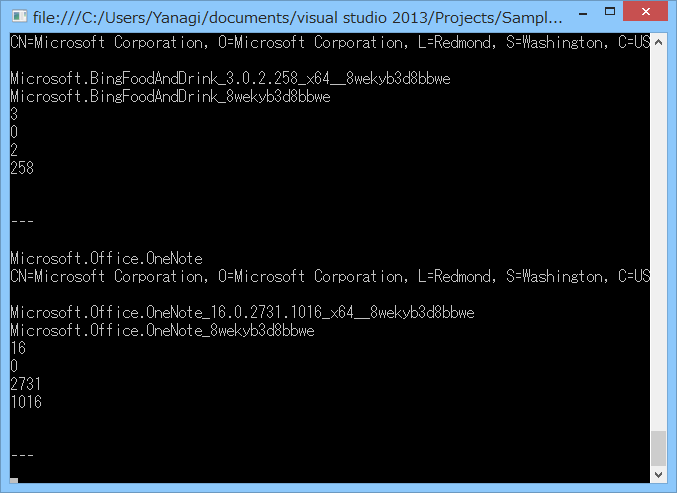
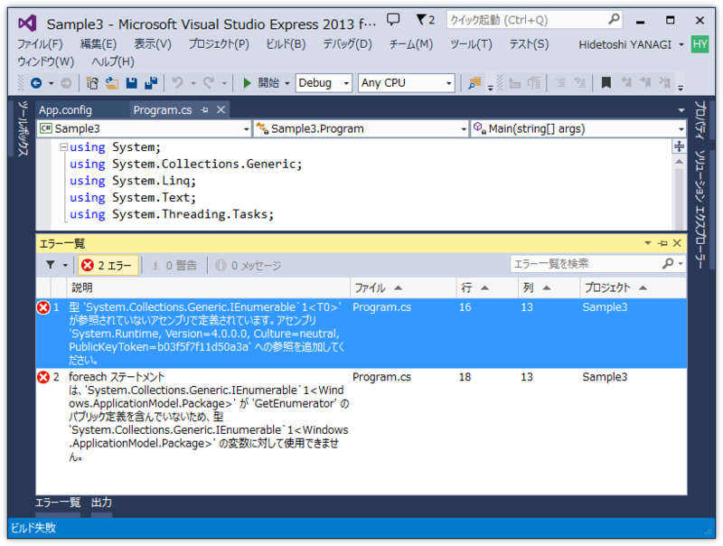
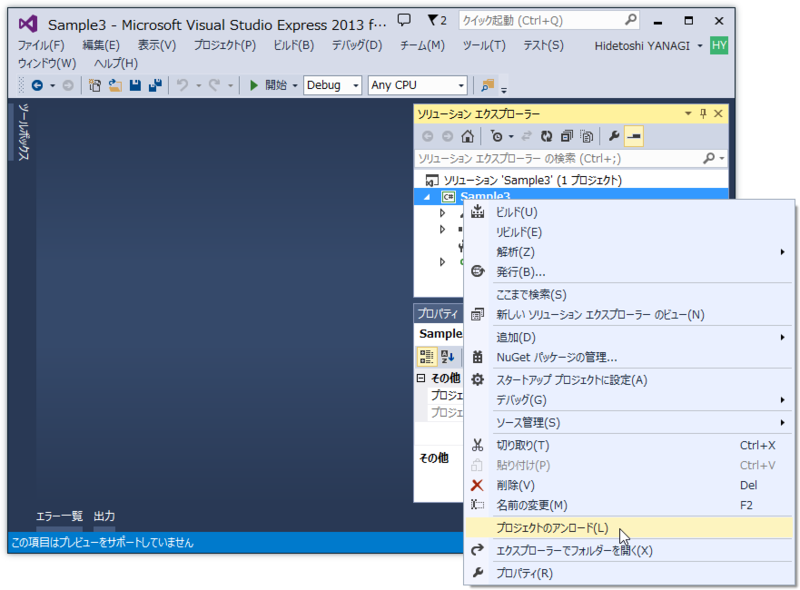
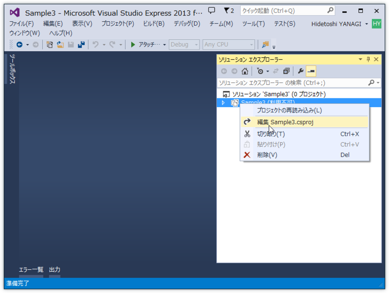
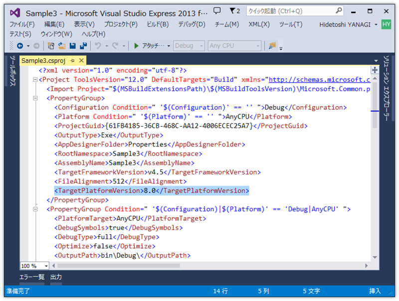
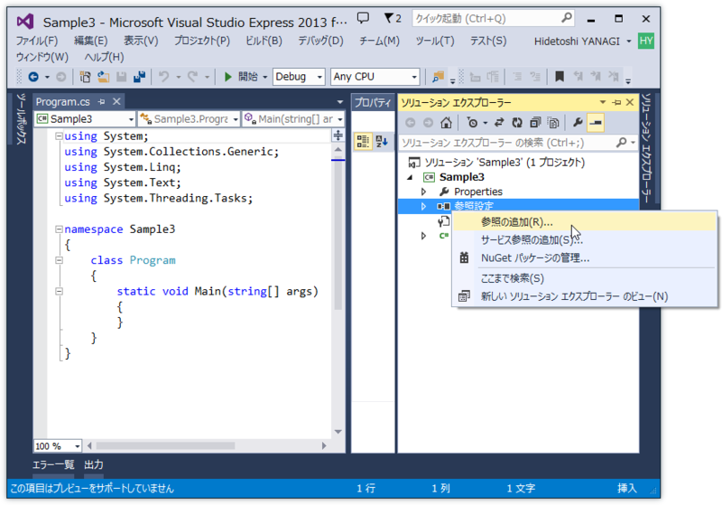
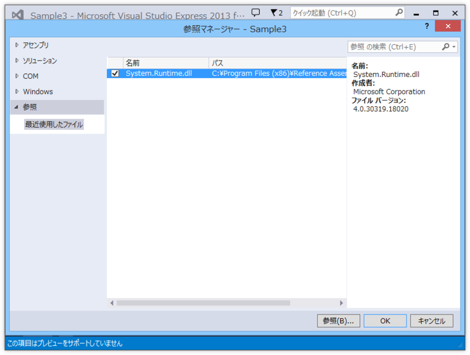

インストール済みの Windows Store Apps を列挙する
執筆日時：

方針
PackageManager.FindPackagesForUser(String) Method (Windows) を使えばよい――が、この API は Windows Store Apps では使うことができない。今回は Windows Desktop Apps （コンソール）からこの API を呼んでみる。
準備

適当にコードを書いて実行すると、
アセンブリ 'System.Runtime, Version=4.0.0.0, Culture=neutral, PublicKeyToken=b03f5f7f11d50a3a' への参照を追加してください。
というエラーが出る。とりあえず System.Runtime を参照に追加しろということらしいがどうすればよいのだろう……と思ったら、特集：デスクトップでもWinRT活用：開発者が知っておくべき、ライブラリとしてのWindowsランタイム (2/5) - ＠IT に解決策があった。
まとめると、

プロジェクトを一度アンロードして……

*.csproj ファイルを編集し……

TargetPlatformVersion を 8.0 にする。
<?xml version="1.0" encoding="utf-8"?> <Project ToolsVersion="12.0" DefaultTargets="Build" xmlns="http://schemas.microsoft.com/developer/msbuild/2003"> <Import Project="$(MSBuildExtensionsPath)\$(MSBuildToolsVersion)\Microsoft.Common.props" Condition="Exists('$(MSBuildExtensionsPath)\$(MSBuildToolsVersion)\Microsoft.Common.props')" /> <PropertyGroup> : : <TargetPlatformVersion>8.0</TargetPlatformVersion> // <-- この行を追加

で、もう一度プロジェクトを読み込んで［参照の追加］をすると、

［Windows］という欄ができている。今回は、パッケージ関連の API を利用するので Windows.Management と Windows.ApplicationModel を参照に追加。さらに、最初のビルドエラーで要求されていた System.Runtime も参照に追加しておく。

“%ProgramFiles(x86)%\Reference Assemblies\Microsoft\Framework\.NETFramework\v4.5\Facades\System.Runtime.dll”ファイルを指定して参照に加える。これで準備は完了。
コード
using System; using System.Collections.Generic; using System.Linq; using System.Text; using System.Threading.Tasks;namespace Sample3 { using Windows.Management.Deployment;
class Program { static void Main(string[] args) { var manager = new PackageManager(); var packages = manager.FindPackagesForUser(string.Empty);
foreach (var package in packages) { Console.WriteLine(package.DisplayName); Console.WriteLine(package.Id.Name); Console.WriteLine(package.Id.Publisher); Console.WriteLine(package.Id.FullName); Console.WriteLine(package.Id.FamilyName); Console.WriteLine(package.Id.Version.Major); Console.WriteLine(package.Id.Version.Minor); Console.WriteLine(package.Id.Version.Build); Console.WriteLine(package.Id.Version.Revision); Console.WriteLine(package.Description); Console.WriteLine(package.PublisherDisplayName); Console.WriteLine("—"); }
Console.ReadKey(); } } }
適当にこんな感じにして実行。
package.DisplayName や package.Description などが表示されないが、この情報はそもそも提供されていないらしい。がっかりだ。
ただ、 luisrigoni/metro-apps-list · GitHub で示されているように、Win32 API で PRI を読むなどすれば取得できないこともないらしい。だいぶ面倒だな……。